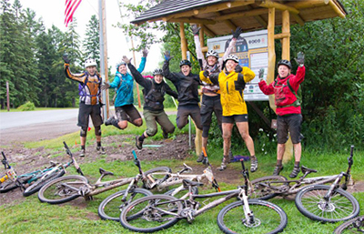

About The Club
The Copper Harbor Trails Society Inc. also known as Copper Harbor Trails Club (CHTC) is officially a 501C-3 non-profit with a mission to advocate, develop and maintain trails and land for human-powered activities in and connecting to Copper Harbor. What we really are is a bunch of fun people that want to share the joy of mountain biking and other trail based human-powered recreation with all ages. We build sustainable, purpose built trails in and connecting to the tiny, 100 resident town of Copper Harbor. In addition, we partner with organizations that have similar goals and work with them to improve trail access throughout the region. During the other six months of the year (some may call it winter), with the help of volunteer groomers, we maintain a few kilometers of ski trail stretching between the town of Copper Harbor and Fort Wilkins Historic State Park, plus our volunteers groom the Churning Rapids Snow Bike Trails outside Hancock. The Copper Harbor Trails Club also built and helps maintain a 9 hole disc golf course on the grounds of the Keweenaw Mountain Lodge. Basically we love trails and we do what we can to continually improve the system and host events that showcase the trails and support the local economy.
Club Events
| Event | Date | Location | Cost |
|---|---|---|---|
| Ride the Keweenaw | May 25 - May 27 | Greenland | $150 |
| Copper Harbor Guys Clinic | June 15 - June 17 | Bella Vista | $350 |
| Copper Harbor Ladies Clinic | July 27 - July 29 | Bella Vista | $350 |
{kind=link}
Harbor Haus Restaurant
Overlooking Porter's Island and Lake Superior, this upscale restaurant and seasonal single-suite guesthouse is 2 blocks from Route 41 and a mile from Fort Wilkins Historic State Park. Featuring cathedral ceilings and panoramic Lake Superior views, the suite has wood-paneled walls, a living area and a whirlpool tub, as well as a deck. Learn more
{kind=link}
Cedar Point Cabins
We offer four seasonal cabins, and two new, year round cabins nestled between Lake Superior and Mt. Baldy on the shore of Lake Bailey. Your quiet, comfortable “base-camp” cabins for year round access to all of your Keweenaw adventures. We are located between Eagle Harbor and Copper Harbor on Hwy M-26 aka Shoreline Drive. Please browse through our website to learn about the property and surrounding area. Learn more
{kind=link}
Keweenaw Adventure Company
Look no further, we have one of the best selections of mountain bike rentals in Michigan. We pride ourselves on the fact that we sell the majority of our used rental bikes at the end of each season and in turn, reinvest in new, state-of-the-art bikes at the start of every year to ensure a high-quality experience for our Upper Peninsula mountain biking customers! Learn more
{kind=link}
Traprock Pottery
Traprock Pottery is made by area native Dennis Sotala and his wife Leslie. His father John immigrated to the Keweenaw as a small boy from Finland, and worked in the Quincy Mine and farmed. His mother, also Finnish, was born in a log cabin in Lac La Belle to a rag rug weaver and a commercial fisherman. Dennis’s winter studio overlooks the Traprock Valley, about thirty miles from Copper Harbor in the Upper Peninsula of Michigan. Traprock is a dark volcanic rock, a type of basalt, which is seen along the shores of the Keweenaw Peninsula. Learn more
{kind=link}
Other
Traprock Pottery is made by area native Dennis Sotala and his wife Leslie. His father John immigrated to the Keweenaw as a small boy from Finland, and worked in the Quincy Mine and farmed. His mother, also Finnish, was born in a log cabin in Lac La Belle to a rag rug weaver and a commercial fisherman. Dennis’s winter studio overlooks the Traprock Valley, about thirty miles from Copper Harbor in the Upper Peninsula of Michigan. Traprock is a dark volcanic rock, a type of basalt, which is seen along the shores of the Keweenaw Peninsula. Learn more